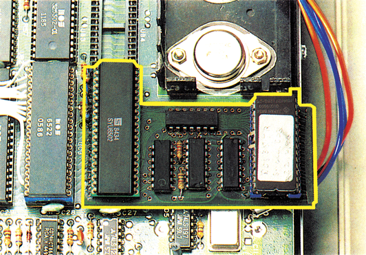

So schnell wie der Wind...
Mit der neuen Erweiterung Professional 1541 Dos können Sie Ihr Floppy Flash- oder Speeddos-System auf noch höhere Geschwindigkeiten bringen.

Wenn Sie bisher mit Speeddos, Speeddos plus oder Floppy Flash gearbeitet haben, so haben Sie bestimmt schon einmal mit Interesse die Entwicklung auf dem Markt der Floppy-Speeder verfolgt. Gab man sich vorher noch mit einer bis zu l4mal so schnellen 1541 zufrieden, so wird das Laufwerk nun mit mehr als der 25fachen Geschwindigkeit betrieben.
Das bringt die Floppy zur »Raserei«
Beim Professional Dos handelt es sich um eine kleine Modifikation des Speeddos-Betriebssystems oder des Betriebssystems von Floppy Flash, wobei in der Floppy zusätzlich eine kleine Platine untergebracht wird. Der Computer erhält ein EPROM mit dem neuen Betriebssystem.
Da die bisherigen Methoden zur Steigerung der Geschwindigkeit durch das Anbringen einer Parallelverbindung zwischen Floppystation und Computer schon ausgereizt sind, mußte sich Mikrotronic System etwas Neues einfallen lassen, um eine weitere Geschwindigkeitssteigerung zu erzielen.
Durch eine hardwaremäßige GCR-Codierung und einen Systemtakt in der Floppy, der automatisch beim Laden auf zwei Megahertz umgeschaltet wird, kann der Zugriff auf die Diskette nochmals um ein Mehrfaches beschleunigt werden. Der Erfolg ist ein bis zu 40mal schnelleres Lesen der Floppystation von der Diskette, was sich effektiv durch ein bis zu 35mal schnelleres Laden bemerkbar macht. Das Speichern wird ungefähr fünfmal schneller. Diese Zeiten beziehen sich natürlich auf den Computer im Normalmodus. Wir haben die Zeit ohne Suche im Directory gemessen, wie daszur Zeitin den meisten Werbeangeboten gemacht wird, um eine Verfälschung zu vermeiden.
Durch einen Trick wird übrigens erreicht, daß sich der Prozessor in der Floppy auch im Zwei-Megahertz-Beschädigung zu befürchten ist. Das mag zur Beruhigung all derjenigen dienen, die zum Beispiel schon einmal aus Versehen den Prozessor unter Prologic Dos angefaßt haben. Hier verbrennt man sich nämlich fast die Finger! Das Besondere am Professional 1541 Dos ist aber sicherlich, daß nur ein sehr kleiner Eingriff zum Beispiel in das Speeddos-Betriebssystem gemacht werden muß, um die gewünschte Geschwindigkeitssteigerung zu erreichen. Haben Sie also Programme, die vorher unter Speeddos funktioniert haben, so ist nicht zu befürchten, daß diese unter Professional 1541 Dos nicht mehr laufen. Auch alle Tastaturfunktionen und Tastenbelegungen bleiben erhalten. Sie wurden höchstens, soweit notwendig, ergänzt. Eine Gewöhnung an das neue System ist also nicht nötig. Wenn Sie nicht nur mit der Grundversion von Professional 1541 Dos arbeiten wollen, dann können Sie das System erweitern. Als wichtige Zutrieb nur unwesentlich erwärmt, so daß keine Beschäsätze wären zum Beispiel die Option für 40 Spuren, das Kopierprogramm »Filemaster« und eine überarbeitete Version des Befehls zum Überschreiben eines Files mit dem Klammeraffen zu nennen.
Das Professional 1541 Dos kostet in der Grundversion für Speeddos oder Floppy Flash 169 Mark. Willman optiional auch auf 40 Spuren arbeiten, so beträgt der Preis 189 Mark. Eine Version für TurboAccess ist laut Mikrotronic System in Vorbereitung. Will man ein Komplettsystem kaufen, so erhältman das User System Professional für 258 Mark oder das Toolkit System Professional für 288 Mark. Letzteres System enthält dabei noch ein paar nützliche Programmierhilfen für den Anwender und einen eingebauten Monitor. Hier ist außerdem der Betrieb mit mehreren Parallel-Laufwerken vorgesehen.
Eine recht interessante Produktpalette also, die vor allem für Besitzer eines Speeddos von Vorteil sein dürfte, die ihrer 1541 Beine machen wollen.
(ks)Info: Mikrotronic System, Dipl.-Ing. K. Roreger, Liebigstraße 28, 4780 Lippstadt